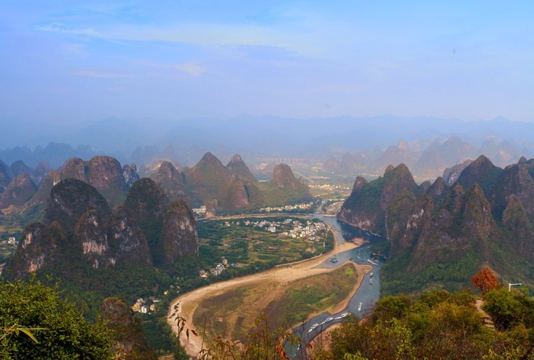

Добро пожаловать в туристическую сеть Гуйлиня~
Добро пожаловать в туристическую сеть Гуйлиня~
издатель:雨棚下的鱼время：2020-04-09
Если вы хотите выбрать одного из представителей китайских пейзажей, ему должно быть место в пейзажах Гуйлиня. Она даже представляет Китай в глазах иностранцев.Будь то голливудский блокбастер или иностранные новости, пейзажи Гуйлиня незаменимы для всего, что связано с китайскими культурными символами. Я до сих пор помню, что в прошлом была книга Странствующий Яншо.Она была написана примерно в 2000. В то время Китай только вступил в период развития, и информация не была так развита, как сейчас.В то время Гуйлинь мог пойти бродить. Спустя столько лет индустрия туризма в Гуйлине процветала, и вдоль реки Ли были созданы различные живописные места разного размера.Даже в галерее Шили в Яншо десятки живописных мест заключены всего в нескольких километрах, что действительно головокружительно для туристов.
За таким диким ростом туризма ландшафт Гуйлиня больше не вызывает ностальгии у туристов. В сочетании с сегментированным развитием реки Ли и закрытием пешеходного маршрута в поселке Янди наша мечта о странствиях и походах была полностью заблокирована. После поиска информации во многих местах, выполнения множества стратегий и обращения к опыту моих предшественников я наконец-то совершил поездку на этот раз, и это также позволило мне найти пейзаж Гуйлиня в оригинальном сне.
Кроме того, треккинг по Лицзяну - самый национальный стиль среди десяти лучших классических треккинговых маршрутов в Китае. Пейзажи и культурные обычаи Гуйлиня в дороге - это то, к чему я стремлюсь. Этот треккинговый маршрут не сложен и подходит практически для всех. Если есть это шанс, я надеюсь, что вы можете быть очарованы этим пейзажем так же, как и я.
Из прошедших к тому времени небольших деревень также следует, что нынешнее развитие туризма на реке Ли не является основной частью экономики туризма для людей, живущих вдоль реки. экономической опорой, а туризм стал лучшей сельскохозяйственной экономикой. Это гарантирует, что аборигены вокруг реки Ли не будут потеряны, а также сохраняет местные культурные традиции рыболовства и земледелия. По сравнению с современным развитием туризма в пустынном городском бизнесе модель туризма Гуйлиня имеет эталонное значение.
Нынешняя экологическая защита реки Ли очень хороша.Как открыть всю реку Ли упорядоченным образом, все еще остается спорным.С точки зрения защиты окружающей среды и экономического развития она должна быть хорошо сбалансирована. Я больше склоняюсь к защите окружающей среды, но также совершенно необходимо обеспечить соответствующие возможности развития и туристические продукты в соответствии с потребностями людей.Разнообразие и защита современных путешествий не противоречат друг другу, и это не хороший маршрут, который нужно закрыть только потому, что экономических нужд туризма.